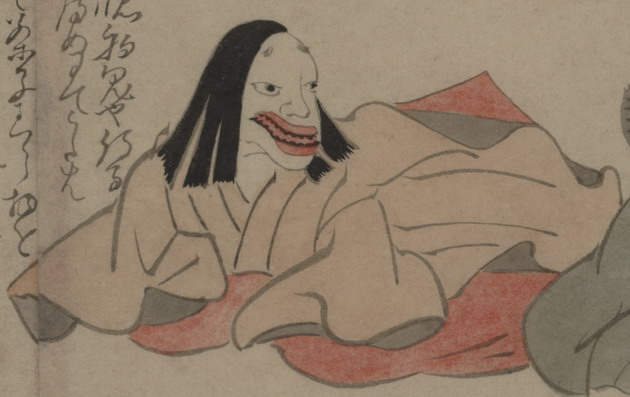

貴族らしき女の化物。赤い大きな口には、お歯黒をした歯が並んでいる。薄紅色の上着に赤い袴を身につけて、座っている。
出典：親書誌：U426_nichibunken_0150：付喪神絵詞；ツクモガミエコトバ／日付：2010／資源識別子：U426_nichibunken_0150_0018_0000
Copyright (c)2010- International Research Center for Japanese Studies, Kyoto, Japan. All rights reserved.